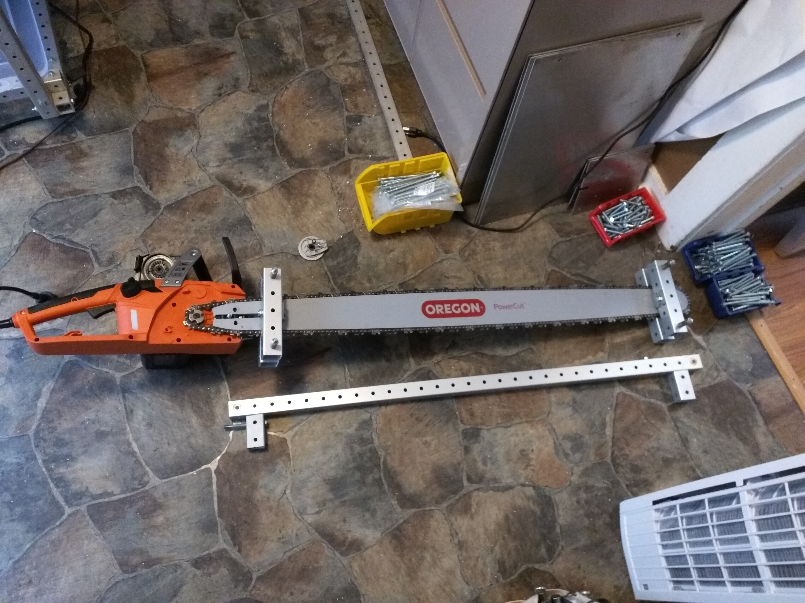
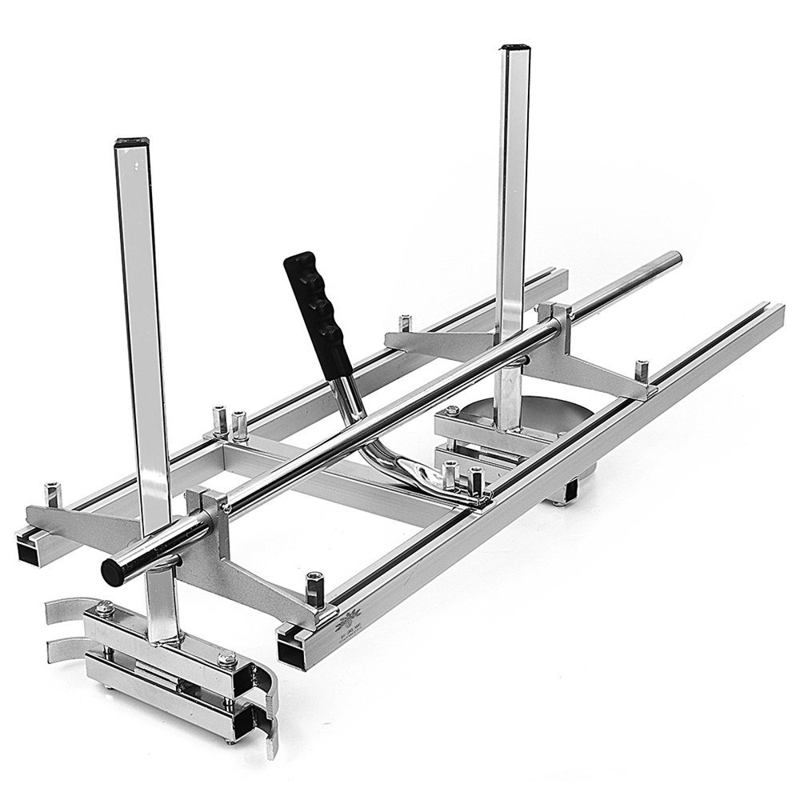
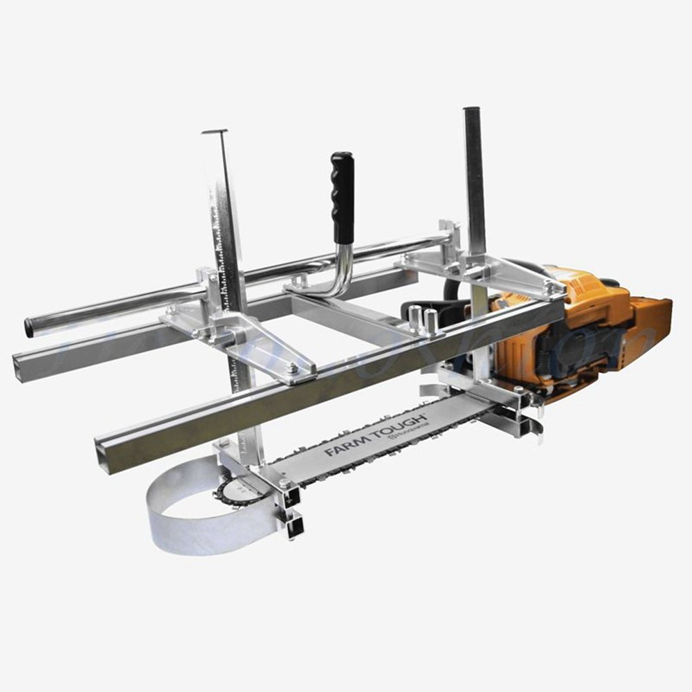

lumber mills revision 4761
^ Projects infobox ^^
| image | Chainsaw mounts.jpg |
| designer | [[user:tim|Timothy Schmidt]] |
| date | 2013 |
| tools | [[wrenches|Wrenches]] |
| parts | [[frames|Frames]], [[nuts|Nuts]], [[bolts|Bolts]], [[plates|Plates]], [[end_caps|End caps]] |
| techniques | [[shelf_joints|Shelf joints]], [[tri_joints|Tri joints]] |
| stl | |
| git | |
Challenges
Square profile raw material suitable for producing frames is widely available for a price. Lowering cost and increasing availability requires sourcing raw material from the environment.
Approaches
<youtube>09ixWGEvlAI</youtube>
<youtube>bzjZ0qla_to</youtube>
Chainsaw mills are relatively simple and have the advantage of reusing the chainsaw already needed for felling and limbing the tree. Disadvantages of chainsaw mills typically include more wasted wood than band or circular saws, intense amounts of manual labor, and increased danger compared to automated mills. The Replimat lumber mill attempts to combine advantages of a typical chainsaw mill with increased automation and safety offered by expensive bandsaw mills.



Waste flows
Wood sawdust can be processed by pellet presses for burning in an automatic wood pellet stove.
References
<youtube>s21unFgBuQU</youtube>